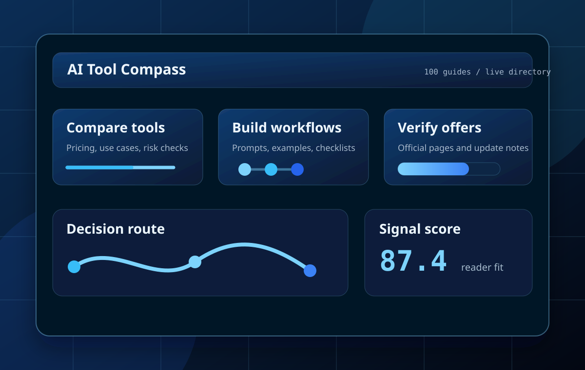

Draft, edit, and repurpose one idea across channels
Start here if the job is blog posts, landing pages, newsletters, or brand voice systems that need speed without sounding generic.
Role-based AI routes
This hub is built for readers who know the work they need to finish but do not want to compare dozens of tools first. Start with the role, move into the smallest useful stack, then open the deeper guides only when they help the job.

Start by role
These route cards keep the job visible. Each one points to one broad guide, one workflow or prompt page, and one category hub so readers can move without wandering.
Start here if the job is blog posts, landing pages, newsletters, or brand voice systems that need speed without sounding generic.
Use this route when evidence, citations, retrieval, and claim checking matter more than fast drafting.
Pick this role path for blog art, thumbnails, design support, and product visuals that need stronger review loops.
This route is for storyboards, short-form video, scripts, and B-roll decisions where structure matters before prompting.
Choose this path when the work is notes, task capture, process documentation, and lightweight automation without tool sprawl.
Use this route for coding assistants, debugging, test generation, and implementation workflows that keep human verification visible.
First useful win
A better stack is usually smaller than people expect. These bundles keep one role, one outcome, and one review habit together so readers can ship something before the tool list grows out of control.
Most beginners get value faster by pairing a general assistant with one fact-checking flow and one repeatable writing system.
Use a research-first tool, a citation workflow, and a final plain-English review so source-backed work survives the edit pass.
Separate thumbnails, product visuals, and motion work so you pick the right prompt style and avoid burning credits on the wrong medium.
Coding AI works best when the stack includes a clear task, a verification habit, and a place to compare tools before you upgrade.
Guide handoff
Once the role is decided, move into the strongest long-form guide instead of sampling random tools. This preserves editorial depth without forcing it too early.

Learn how to choose a useful AI tool stack across chatbots, research, images, video, design, and productivity with a clear workflow,.

Learn how to choose writing tools by content type and workflow with a clear workflow, examples, and beginner mistakes to avoid.

Learn how to compare research assistants by source quality and workflow fit with a clear workflow, examples, and beginner mistakes to.

Learn how to choose coding assistants without getting overwhelmed with a clear workflow, examples, and beginner mistakes to avoid.

Learn how to choose video tools by clip type and budget with a clear workflow, examples, and beginner mistakes to avoid.

Learn how to choose an image tool for different visual jobs with a clear workflow, examples, and beginner mistakes to avoid.
Return loops
A role hub works better when it remembers context. Saved pages, recent reading, and the site feed help readers resume the same decision path on the next visit.
Track
Use the feed when you want updates on comparisons, workflows, and new buying guidance without refreshing the whole directory.
Saved guides
Saved pages give repeat visitors a smaller working set, which matters more than raw article volume once they know their role.
No saved guides yet. Save an article or comparison page and it will appear here automatically.
Continue reading
Recent reading makes it easier to keep one research thread alive instead of reopening unrelated tabs on the next session.
No recent reading history yet. Open a route target and it will show up here automatically.